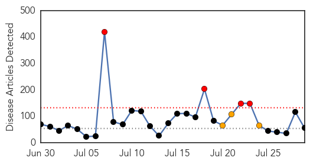

Yellow Fever
30-Day Web Trend
0 alerts, 0 warnings
30-Day Twitter Trend
0 alerts, 0 warnings

Article Locations

Article Confidences

Top Articles:
-
No articles found for Jul 29, 2014
Top Tweets:
-
No tweets found for Jul 29, 2014
Unknown
30-Day Web Trend
4 alerts, 3 warnings

30-Day Twitter Trend
0 alerts, 0 warnings

Article Locations
Article Confidences

Top Articles:
- 0.997
- Mosquito-borne disease kills 550 in India
- 0.951
- Encephalitis Under Control, Claims West Bengal Health Department
- 0.937
- Residents Urged To Take Preventive Measures
- 0.920
- Deadly swine disease now must be reported
- 0.917
- Chicago Tribune
- 0.917
- Chicago Tribune
- 0.917
- Chicago Tribune
- 0.917
- Chicago Tribune
- 0.917
- Chicago Tribune
- 0.917
- Chicago Tribune
- 0.917
- Chicago Tribune
- 0.917
- Chicago Tribune
- 0.917
- Chicago Tribune
- 0.917
- Chicago Tribune
- 0.917
- Chicago Tribune
- 0.917
- Chicago Tribune
- 0.917
- Chicago Tribune
- 0.917
- Chicago Tribune
- 0.917
- Chicago Tribune
- 0.910
- The world windows to Thailand
- 0.910
- The world windows to Thailand
- 0.910
- The world windows to Thailand
- 0.902
- Deadly 'Kissing Bug' on the Rise in Texas and Virginia
- 0.892
- ‘Kissing Bugs’ becoming a growing concern
- 0.866
- File photo of a worker walking among solar panels at a solar power field in Kawasaki, near Tokyo
- 0.866
- U.S. judge says Kurdish tanker near Texas out of court's jurisdiction
- 0.866
- U.S. could unveil new sanctions on Russia 'as soon as today'
- 0.866
- Israeli TV says sides provisionally agree to Gaza truce
- 0.866
- Russia accuses Ukrainian troops of gunfire across border
- 0.866
- A woman shouts against protestors demanding peace for Palestine during a demonstration in Zurich
- 0.866
- Artillery shelling hits central Donetsk
- 0.866
- Russia says latest U.N. human rights report "hypocritical"
- 0.866
- Death toll touches 119; encephalitis under control, say health officials
- 0.857
- Why kids needs the HPV vaccine
- 0.857
- R31bn injection for Gauteng health
- 0.808
- Dr. Politis and Dr. Kaki Join CarePoint Health Medical Group
- 0.803
- Deadly flesh-eating bacteria at Florida beach popular with British tourists kills 10 people
- 0.798
- 13 affected with encephalitis in Arunachal
- 0.793
- Übersicht der Börsennachrichten
- 0.773
- New research offers insight into cold sore virus
- 0.754
- Clinicians not recommending HPV vaccines enough to satisfy the CDC
- 0.732
- Mobile Health Helps Businesses Realize Savings with New Flu Vaccination Return-on-Investment Calculator
- 0.714
- Flesh-eating bacteria rampant in Florida waters : T-Lounge : Tech Times
- 0.687
- PEDV a Warning Sign for Other Diseases to Come
- 0.683
- No Eid Holiday for Bengal Health Workers
- 0.635
- Tuberculosis patient who refused treatment arrested in California
- 0.634
- ACS NSQIP database helps hospital identify and curb its surgical risk
- 0.605
- Infection that kills 200 times more patients than MRSA superbug
- 0.545
- 'Pretty Good' Malaria Vaccine Moves Forward
- 0.537
- Los Angeles County’s tuberculosis patients face court hearing if treatment is refused
Showing top 50 articles...
Top Tweets:
- 0.502
- Fiesta para el periodismo en feria literaria de Paraty, Brasil: La duodécima edición de la Feria literaria int... http://t.co/T7OT0VgTuo